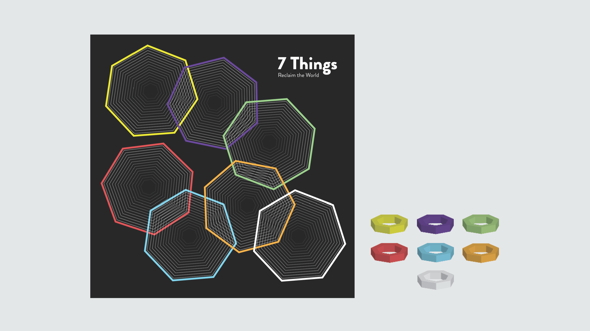
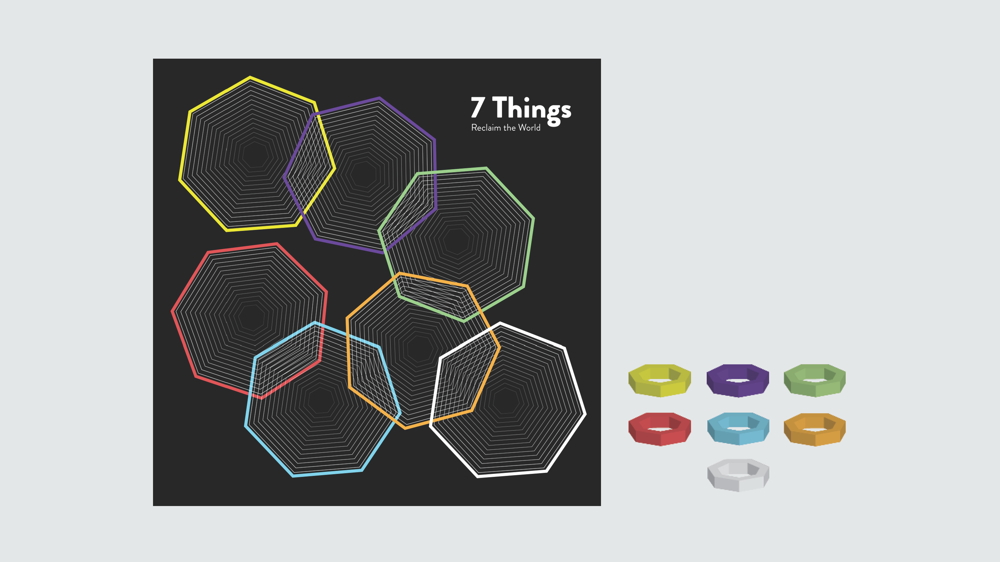

7 Things: Decolonizing Design
 


7 Things: Board Game Design on decolonizing design, 15" x 15" board, 2" x 3.5" cards
Link to @buartdesign Instagram FeatureThe main goal of this project was to decolonize design by recognizing all culturally important forms of making. The idea was to promote messages of diversity, inclusion, and equality of all forms in society. I decided to design a board game for my game design, as I have never experimented with that type of design before. When reading about the project topic of "decolonizing design", I immediately thought about my Latin American Research class I took at Binghamton University in 2019. The class discussed Latin American origins, appropriations, colonization, and so on. Colonization was a main idea discussed in the class, and the main reading assignment was the novel, "A History of the World in 7 Cheap Things" by Raj Patel and Jason W. Moore. The book explained how colonization had Westernized/appropriated indigenous cultures, and introduced a system which has cheapened or devalued "things" for profit. These 7 things are nature, money, work, energy, care, energy, and lives. As inspiration for my project, I wanted to focus on the concept of colonization of various ideas/things in our world, and how it has destroyed them. I altered the topics slightly to make them more understandable and fun for the game: I added food, art, and language. When designing my game, I wanted the visual language to exude minimalism, as many trendy games of today have very minimal and clean cut designs (ex. Cards Against Humanity). I decided that I wanted to use a board, cards, and game pieces for my board game.
I chose a heptagon shape for branding to represent the 7 varying topics, and highlighted each space with a different bold color to differentiate the topics (nature, money, work, energy, art, language, food). On the backs of the cards, I researched various trivia questions that correlated to my concept; each question hinted towards the idea that industrialization/colonization has manipulated these "things". I created the rules on a heptagon shape, and made three-dimensional heptagon pieces to match the varying bold colors. Essentially, the game is based on trivia questions for each topic. Once a trivia question is guessed correctly, the player is allowed to put one of their game pieces on the designated topic space. Players have a chance to steal an opponent's game piece of the board if a heptagon icon is on the question card (and the question is answered correctly). The main goal of the game is to have a game piece on all 7 topic spaces on the board, or essentially "reclaim the world" and mastering your knowledge on the appropriation of the 7 "things".
Source: Patel, Raj, and Jason W. Moore. A History of the World in Seven Cheap Things: Guide to Capitalism, Nature, and the Future of the Planet. , 2017.